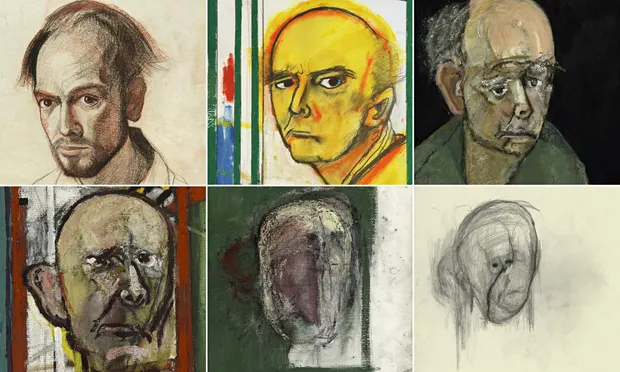
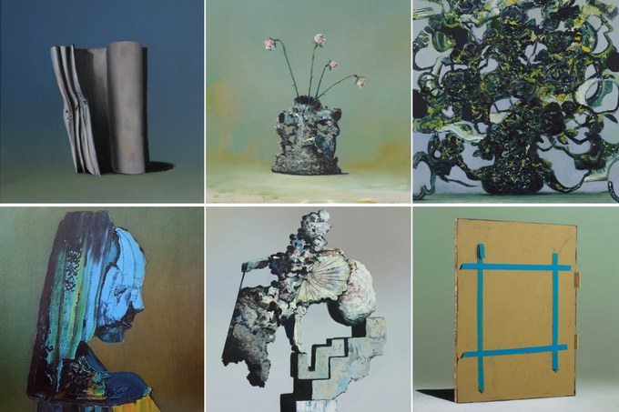
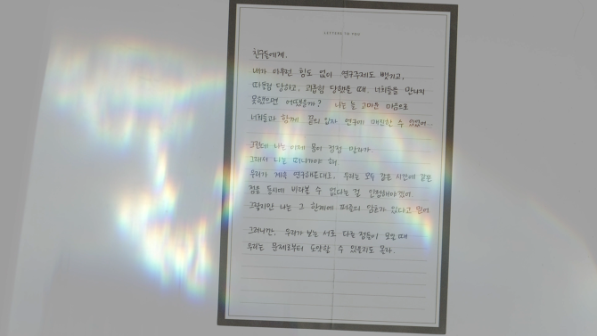
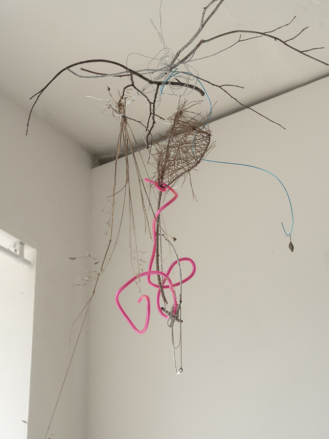

Details from William Utermohlen’s self-portraits, the first, made in 1967, the rest from 1996 the year following his diagnosis of Alzheimer’s disease, to 2000, charting his decline. Photograph: Images courtesy of the artist’s estate and GVArt Gallery, LondonDarkness Visible by William Styron

Album arts of Everywhere at the End of Time
(Stage I - IV, the first line is with I - III and the second line is with IV - VI)

An artwork from the exhibition by Orominkyung

An artwork from the exhibition by Orominkyung